Master’s Research
Automated Microrobot Assembly System
Following is an overview of the research I have conducted on the automated assembly of micro-robots for biomedical applications. For a full review of this research, please look at the manuscript linked here on Google Drive. It has been published to Springer Nature's Journal of Micro and Bio Robotics, 2026 issue. A link to an earlier conference publication is also available on IEEE Xplore.

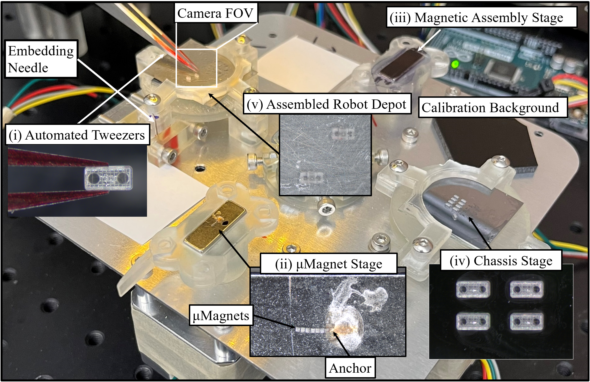
This system is the main project for my Master's thesis. I designed and built the entire systems myself, from the initial brainstrorming phase, to CAD and wiring diagrams, to manufacturing and assembly, and to programming and testing. Currently, it has the capability to embed cubic micro-magnets with dimensions as small as 100 microns per side into micro-robot chassis. It can embed multiple micro-magnets with several different orientations into the same robot. It can also seal liquid drug payloads inside of these microrobots by injecting the payloads with a needle and sealing them with a layer of biocompalitble thermally sensitive wax. These sealed payloads can later be released by melting the wax with a focused ultrasound. All of this it does fully autonomously. Below are some images showing the assembly sequences for embedding and drug loading, and some images of the robots for further clarification on their operation.
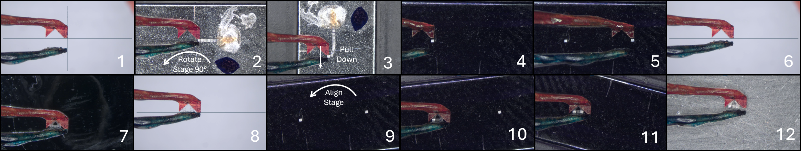

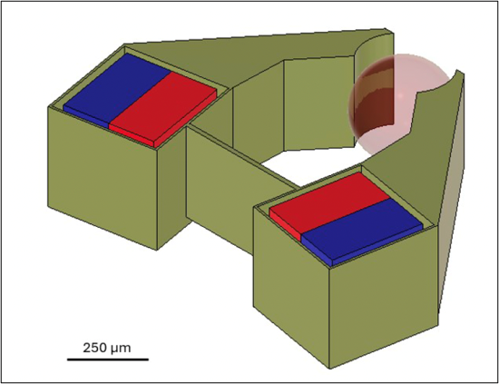

Other than a micromanipulator which was purchased as an OTS part, I built this system almost entirely from the ground up. I designed all my own circuits, soldered and assembled them together, sourced stepper motors to control the different functions, connected eight motor drivers to power supplies and a microcontroller, and made a temperature-controlled dispensing system for the wax out of a 3D printer hotend and a solid state relay. I also did all the mechanical design for the system, taking great care to design as much mechanical stability and robustness into the system as I could, to make the automation software easier to build. Finally, I developed my own computer vision algorithms, something I had never touched before, to track the positions of micro-robots, micro-magnets, and other features. I used several different vision algorithms for this project, the most noteworthy of which was the robot chassis detection function, which used gradient descent optimization methods to estimate the poses of micro-robots with a high degree of accuracy. A figure demonstrating this is shown below. I then put everything together by writing Python code for the processes I wanted to automate, which used serial commands to communicate with a microcontroller, micromanipulator, and microscope camera, integrating the system components into something capable of fully autonomous assemblies.
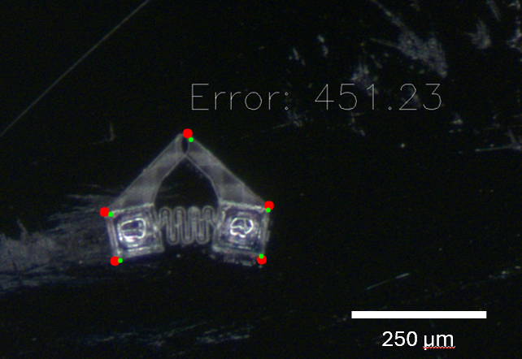
The results of my work were significant increases in the reliability of these assembly processes. I cut down the time for micro-magnet embedding by about 55%, and the time for drug loading and sealing by 67%. Not only was the required time reduced, but the need for human labor was entirely removed. The results also offered greater consistency than what could be achieved by human labor.

Triton Robotics
Trtion Robotics, also known as Netptune Medical Robotics, is a medium-sized company designing a revolutionary new form of robotic endoscope. While working there, I supported the transition of a prototype robot into something ready for clinical trials. What follows are some of the products I did to improve the robustness of Triton's system, and to improve the manufacturing processes that went into making it.
Endoscope Friction Testing & Lubrication Rework
This project began as a simple task to characterize how friction changed due to wear over the lifecycle of a hydrophillic coating on an endoscope. As the tests progressed, it became apparent that there were severe issues with not only the hydrophillic coating, but other parts of the system as well.
Two nested tubes needed to slide smoothly along each other for the system to work, the inner one having a hydrophillic coating on its exterior surface. Maintaing the efficiency of the coating required frequent injection of water into the system to serve as lubricant. A dynamic seal existed at one end of the tubes, to regulate the flow of lubricant, but this seal was found to frequently damage the hydrophillic coating of the tube it was in contact with. To better understand the problem I conducted tests on the effictiveness of the seal and the behavior of the lubricant. I found that neither behaved at all as they had thought to be understood by our team. I conducted several tests to closely examine the behavior of the lubrication, and the causes of damage to the hydrophillic coatings. Using this knowledge, I specified an injection pressure that was required for water to distribute throughout the entire system, and designed a new dynamic seal to be able to hold this pressure. Doing so, I was able to significantly increase the usable life of the hydrophillic coatings and reduce friction in the system to below 5N, which resulted in greater safety margins for clinical trials.
The following images show the machine I used to conduct the friction tests (ZwickRoell), and one of the setups I used for lubrication testing. Portions of the setup are obscured for intellectual property reasons.
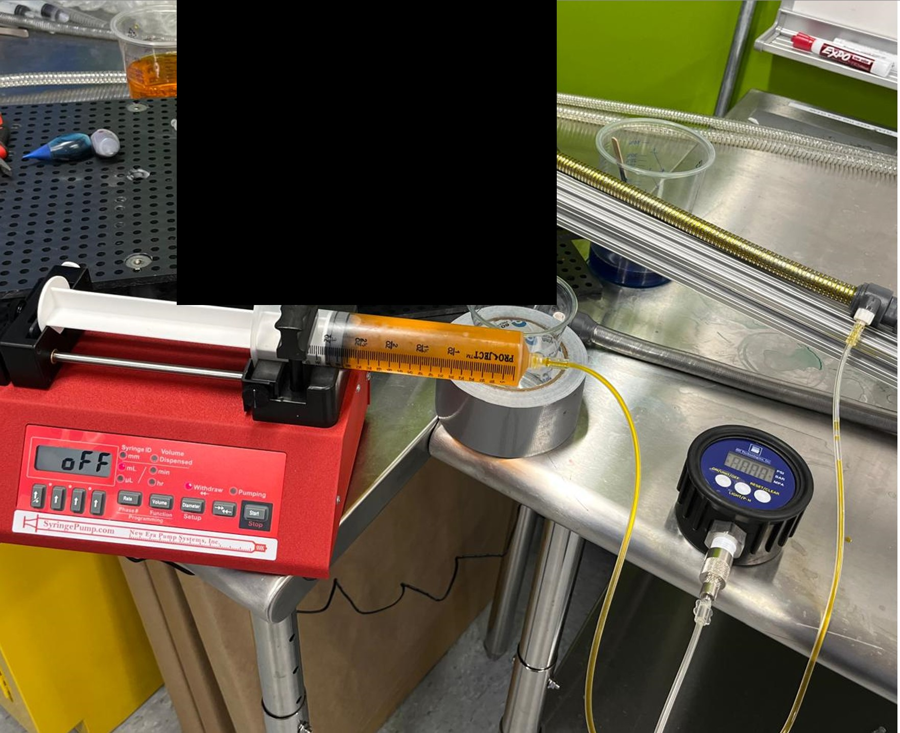

Endoscope Channel Insertion Process
Triton had frequent issues with internal components of endoscopes being damaged during assembly. This occured due to the need to insert 10 flexible channels into the length of an endoscpe, each one being about 2m long and very fragile. The channels would frequently get damaged or tangled, making the endoscope unusable.
To solve this problem, I devloped a method to bind the channels together during insertion, and then safely release the binding after the insertion process was completed. I used a Kevlar string for the binding, which was strong enough to hold the 10 channels together and slippery enough to be pulled out of the endoscope afterwards.


The process took few iterations for me to arrive at what I though was an optimized procedure. However, when I presented it to the technicians, they had very different thoughts. Not only did they point out how the process failed in many ways to be easily and quickly repeatable, but they also found several further optimizations in the procedure that I hadn't thought of. I had to abandon a lot of the ideas that I thought were better, and listen to the people who were actually using what I built, in order to further improve it. For the technicians, I eliminated as many of the disconnected parts as possible, significantly reducing the process complexity and the number of pieces involved. I was also able elimate or simplify several steps based on input from the technicians, further reduced the required time for the process. Our final results were a reduction of the time required for the process from 45 minutes to 15, and a nearly complete elimination of observed failures from kinking and damaging of the channels.
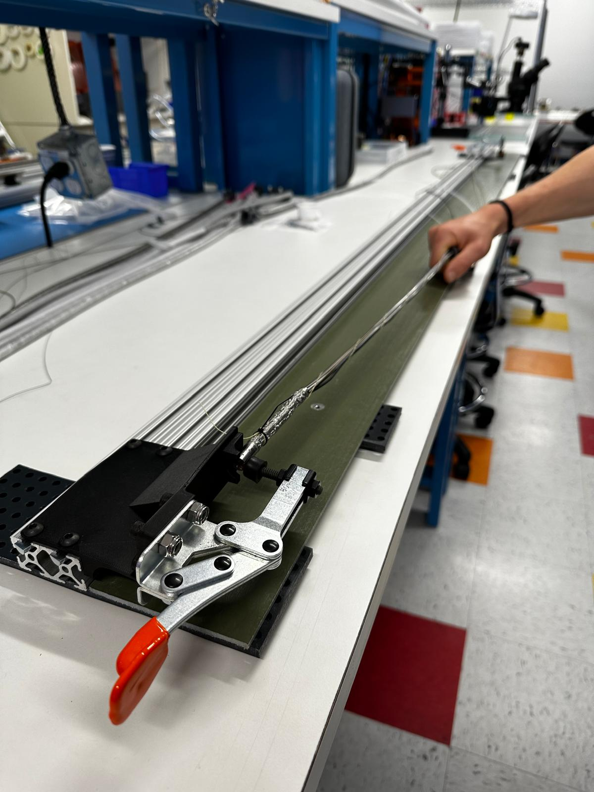

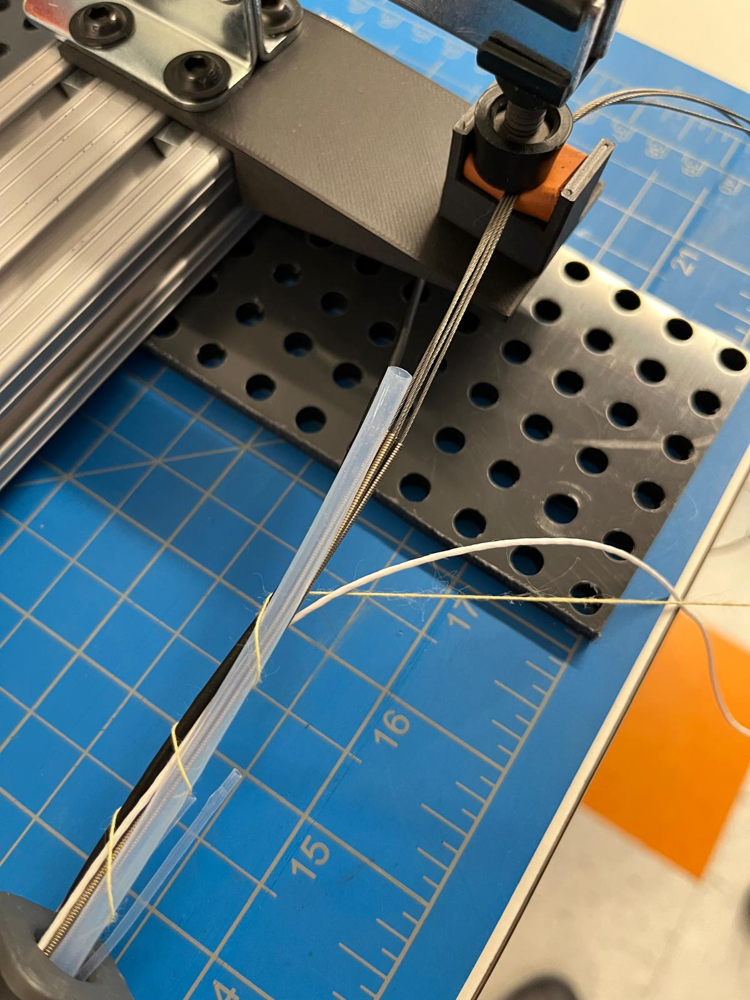
Endoscope Tip Failure Analysis & Destructive Testing
Here, I investigated failures concerning a distal tip breaking off the end of Triton's endoscopes. The following images shows the test setup I used, with the endoscope obscured for IP protection. This test was also done on a Zwick-Machine. In initial tests, I discovered that the failure was occuring due to an adhesive bond between dissimilar substrates. This faulty bond would frequently fail before the substrate, cause the tip to detach from the endoscope body. I corrected this design by eliminating this bond, and replacing it with a new bond between two metal substrates. This new bond was over three times stronger than the first one.
The image on the left shows the test results for this new bond. The new bond strong enough that I could not find a test setup that would cause it to fail, hence the destroyed pin in the image. This failed at over 100N of force, which was sufficient to prevent failures in the operation of the endoscope.
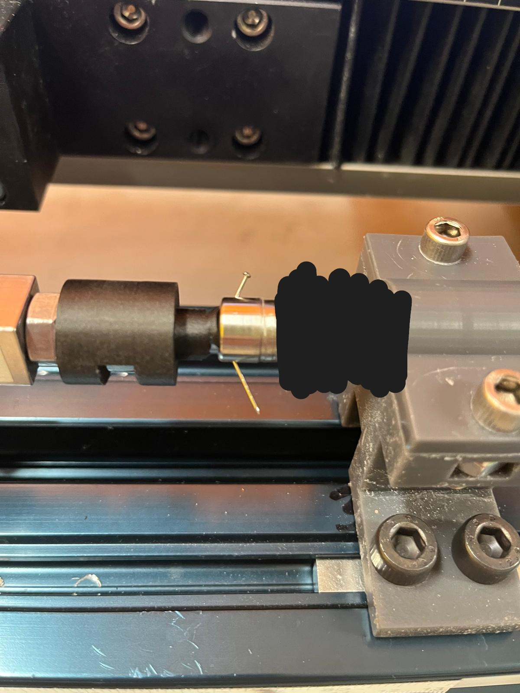
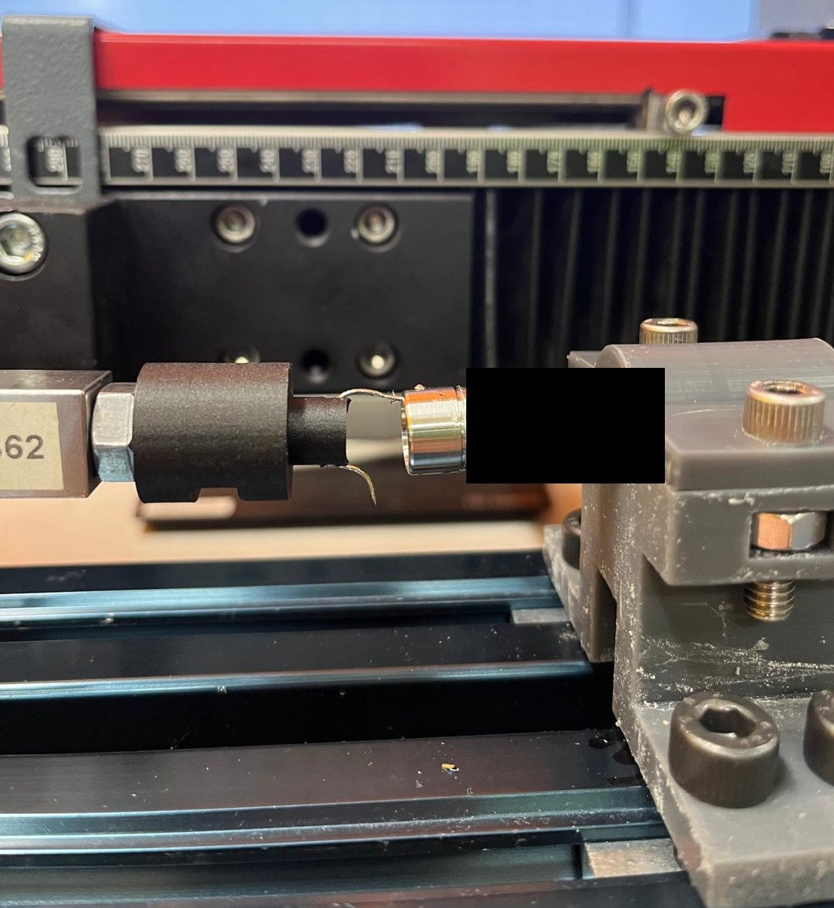
Spectral AI
In order for Spectral AI's product, DeepView, to be deployed in hospitals, many standards had to be met, and reports had to be written showing that these standards had been verified through sufficient testing. My role as an intern at Spectral AI was to support these verification tests. I ran four verification test on DeepView: one to check for water ingress, one to check for the life of a button, one to check for the life of a printed logo, and one to check for the pull force needed to remove fasteners. These written reports were submitted for approval to the FDA.
I also redesigned an optomechanical test fixture for calibration of the camera's in DeepView. I found a way to improve the calibration acuracy with significantly less parts than in the previous design, and in doing so saved the company an estimated $20,000 per year in the expenses required to acquire and use these fixtures.
IPX2 Water Ingress Verification & Design Improvements
DeepView needed to meet IPX2 water ingress standards in order to be safely deployed in hospitals. An IPX2 rating indicates that a device is protected against vertically dripping water when tilted at an angle up to 15° from its normal operating position. The device is tested for 10 minutes, with 2.5 minutes in each of four fixed positions at a 15° angle. The flow rate of the water must be 3 liters per square meter per minute.
Working with another intern and three of our mentors, we designed our own fixture to conduct the IPX2 testing, an image of this is shown below. We used knowlede of fluid mechanics, particularly Bernoulli's equation, to predict the flow rate of water coming out of the fiture, and designed with a factor of safety to ensure that the minimum flow rate was met. In initial tests, we found that we did not meet IPX2 standards. Upon opening the test specimen, we found several places where water had leaked into the system. I fixed this by redesigning the gaskets used for sealing the system, such that they would all have sufficient pressure to keep water out. I then ran further tests to confirm the efficacy of the design, and wrote a report demonstrating our compliance with IPX2 standards, which was submitted to the FDA.
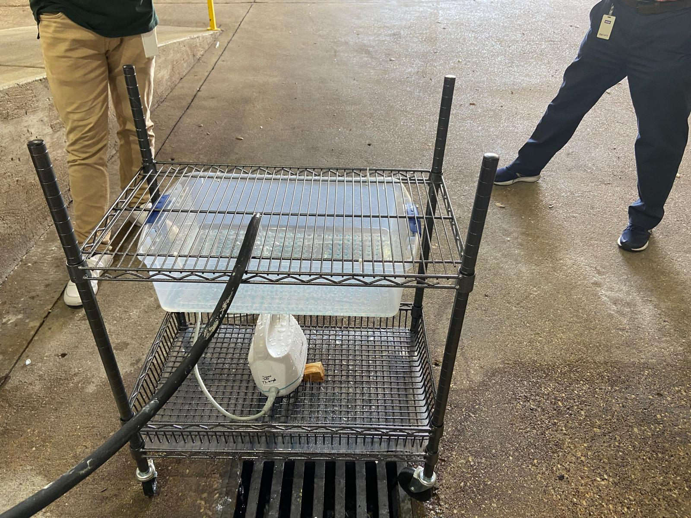
FDA-submitted Bio-Realistic Repeated Cycle and Extended-Life Verification
Additional tests regarding repeated human interactions with DeepView needed to be conducted for verification. I designed processes for two repeated cycle tests tests to confirm the extended life of the product: a test to confirm the life of a button, and a test to confirm the life of an imprinted logo and warning label. Both of the tests used an xArm 6, a 6 DOF robot capable of executing complex movements with precise amount of pressure or force.
The logo test involved repeatedly using an alcohol wipe to clean the product. Specifically, after a certain number of wiping cycles, all text imprinted on the product had to remain legible, at eye level, from a specified distance. Because alcohol evaporates quickly, I had to find a way to keep a sufficient amount of alcohol on the wipe being used. I achieved this with the use of an alcohol reservoir, which provided a steady drip of alcohol onto the wipe at a controlled rate. With this in place, I set the robot to repeatedly perform the wiping motion while the product was held in place. I found no issues with the stability of the imprinted logo nor the warning label, and compiled the results into a report submitted for review ot the FDA.
The button test involved pressing a button on the robot several tens of thousands of times to confirm that it did not fail. The failure could be confirmed with a simple continuity test using a multimeter. I build a structure to mimic the pressing of a finger, and attached it to the robot. I then had the robot press the button the required number of times, and checked for continuity after the cycles were complete. The results showed continuity when the button was pressed, and discontinuity when it was un-pressed, confirming the life of the button. This report was also submitted to the FDA. For an example of the setup, see the following image.
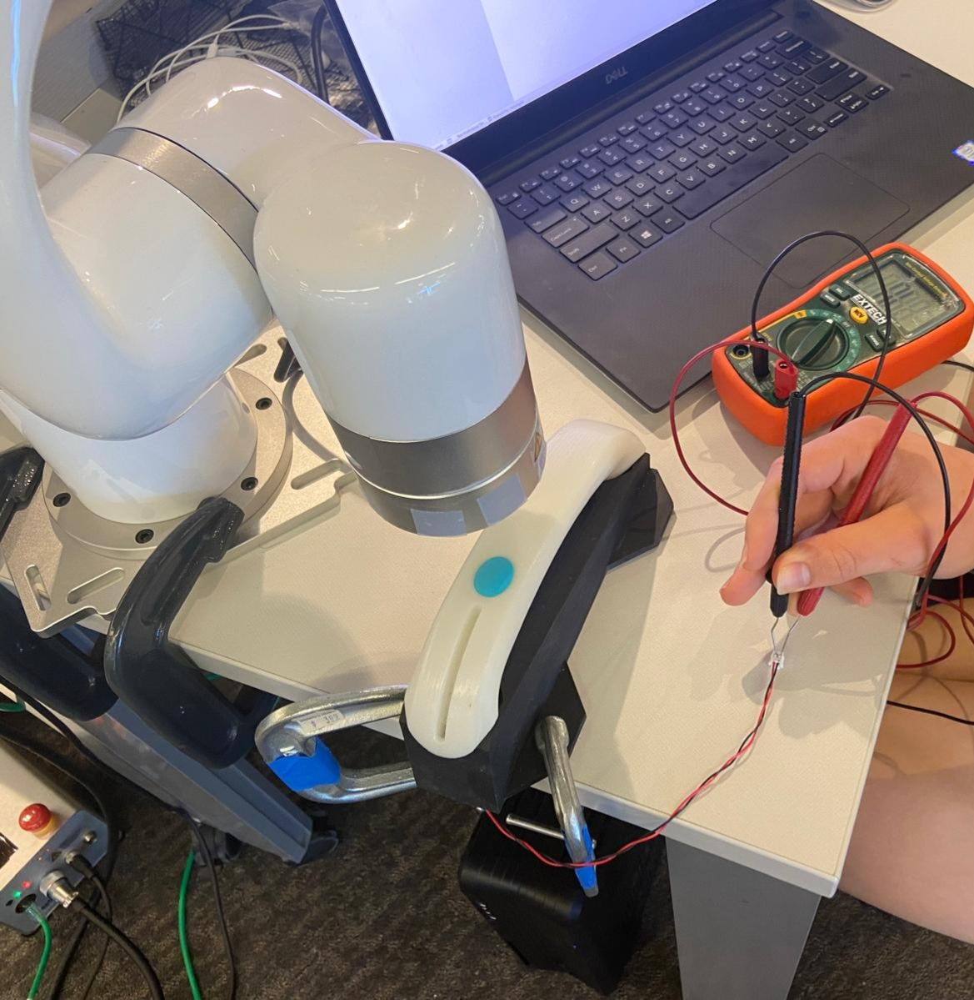
University Projects
Here are highlights of the most interesting projects I have undertaken as a student, including projects on GNC, robotics, hardware, and automation.
Estimation and Control Lab
In this lab, I got to implement many of the various guidance, navigation, and control protocols that I had learned from previous courses. Our first project was the implementation of an extended Kalman filter estimate the position and velocity of a ground robot. We found the noise of the position sensor by taking a large number of readings while the robot was stationary, and calcuating the coavraince matrix of positions in the horizontal place from this data. Finding the process noise was more difficult. The first thing we triend was to assume that a non-holonomic model was accurate for the robot, and look at the variances in the speeds of the wheels. However, this proved quite ineffective, because the robot was, of course, not a perfect non-holonomic system.
In the end, we tuned values in the process covariance matrix to arrive at smooth curves for the robot states. This worked well to avoid noise spikes in the readings, which improved controllability, but it did not necessarily effectively model the actual process. This showed me that the difficult part of implementing a Kalman filter can often have little to do with the math behind the filtering, and much more to do with accurate system ID and noise modeling.
Below is one of the graphs we generated to estimate the heading of the robot. Interestingly, this was doable with only knowledge of initial conditions and process modeling, and without any sensor data that directly tracked the heading of the robot. This shows the robustness of the extended Kalman filter.
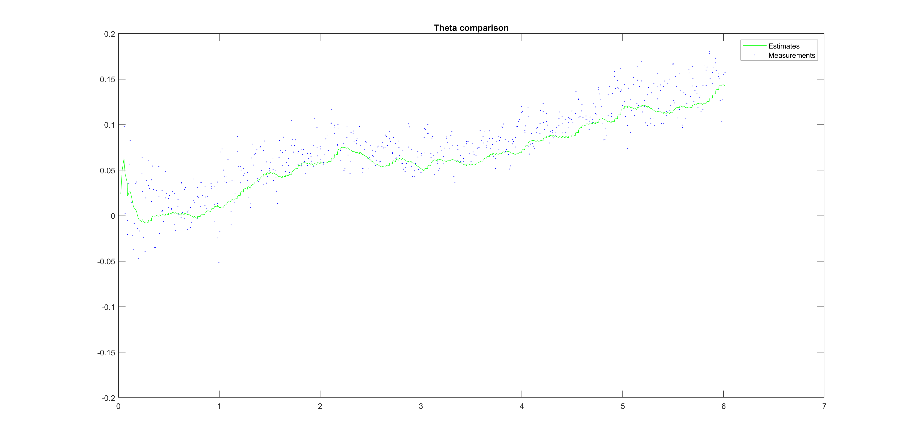
Another noteworthy project was guiding robots around obstacles to reach a designated destination. We built a program to plan a trajectory for a robot to maneuver around an circular obstacle which would be moved partway through the execution of the planned path, and used PID control to make the robot follow the trajectory. This required us to use an online path estimation algorithm that wouldn't be too computationally intensive. To do this, we used the MATLAB fmincon function to calculate the optimal trajectory to reach the end destination while avoiding the obstacle. Shown below is a graph of the path taken by our robot and the moving obstacle.
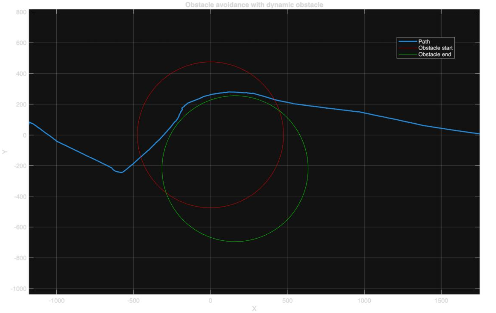
Adaptive Control
This class dealt with implementing control algorithms on plants or systems with a high degree of uncertainty, and trying to estimate the parameters of those systems with the control algorithm online. We began with some background on random variables and probability to better understand the nature of noise and the limits of the estimation schemes we were going to learn. Then we looked at the least squares system identification technique, and implemented this in simulations on several different systems. With this background, we then dove into various methods to estimate and control systems simultaneously. Here, I present two of what I think are the most intersting and most valuable simulations that I created for this class.
The first of these is not actually an adaptive control technique at all, but a classic nonlinear system control technique knwon as robust control, or sliding mode control. This is a technique that uses Lyapunov's stability theorm to guarantee that for a system whose parameters are known within a a certain range, the tracking of a specified trajectory can be achieved within a certain margin. It is perhaps the most commonly deployed control algorithm for nonlinear systems because of this incredible robustness. However, it can come with the drawback of needing actuators that are capable of reversing direction at extreme frequencies. Shown below are some results I generated for a linear motor with the following equation. Here all the variables are known only within a margin, with no exact values. The trajectory tracking shown here is good, but there is severe ringing in the control input.
$$
M_e \ddot{y}
= u
- B \dot{y}
- A_{sc} S(y)
+ A_{cog1} \sin\!\left(\frac{2\pi}{P} y\right)
+ A_{cog3} \sin\!\left(\frac{6\pi}{P} y\right)
+ d(t)
$$
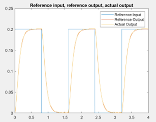
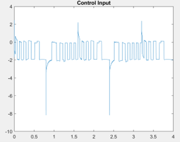
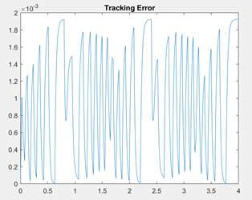
It is possible to reduce the ringing in the control input by reducing the specified margin of error for the trajectory tracking. However, this is obviously an undesirable sacrifice. We can instead attempt to estimate the values of the system parameters online using a combination of robust control and adaptive control. Again using Lyapunov's stability theorm, we can prove that if our system parameters lie within certain known margins, then the combination of our robust control law and our adaptation law will yield trajectory tracking within a certain margin. This is quite powerful because we are able to get the benefits of both control methods. However, there is a disadvantage in that although we can prove trajectory tracking convergence, we cannot prove that our parameter estimates will converge to the actual parameter values of the system, and it turns out to be extremly difficult to solve this issue. Part of the reason is because the better tracking performance is, the less data there is for the parameter estimates to work with. This can be seen in the following simulations. Although we do achieve better tracking and less ringing in the input, our parameter estimates do not converge to the real values.
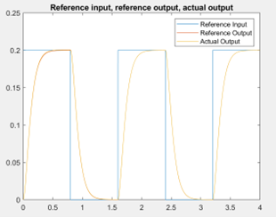
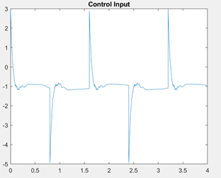
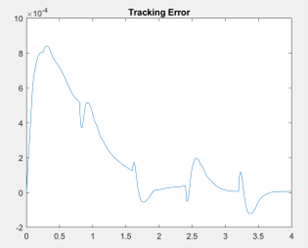
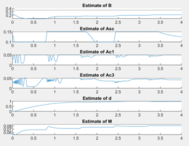
Senior Design Project
For my senior design capstone project, I built a photobioreactor for growing algae in a controlled laboratory environment with five other students. This project was done for the Purdue Environmental Biotechnology lab, so that they would have a way to more scientifically grow their algae for data collection. The project involved some mechanical design for the interior of the bioreactor, and a significant amount of electrical hardware and software dsign to actually run all of the systems. Me and a good friend of mine designed, built, and programmed all of the electronic systems for the project. We created a SCADA system that used serial IO with an Arduino to record readings from sensor and allow a user to interact with the device.
Because this project involved electronics near water, I had to pay extremely close attention to electrical safety when designing the electronics housing. I also had to make things safe to use for people that were not at all used to the dangers of electronics, since the system used 110V AC grid power. Two of my main electrical safety measures were a GFCI and a set of fuses, and for mechanical safety, I used waterproof connectors and neoprene rubber seals. Inside, the electronics had four different voltage levels, four different sensors for measuring temperature, pH, dissolved oxygen and algae concentration, five solid state relays, and seven controllable peripherals. An Arduino Mega was used to control all of this - take readings from the sensors using SPI and I2C serial protocols, open and close the relays, interpret instuctions from human users, and record data in a file for the users to examine later. Shown below is the electrical wiring schematic for the project, and some pictures of the final assembled electrical enclosure.
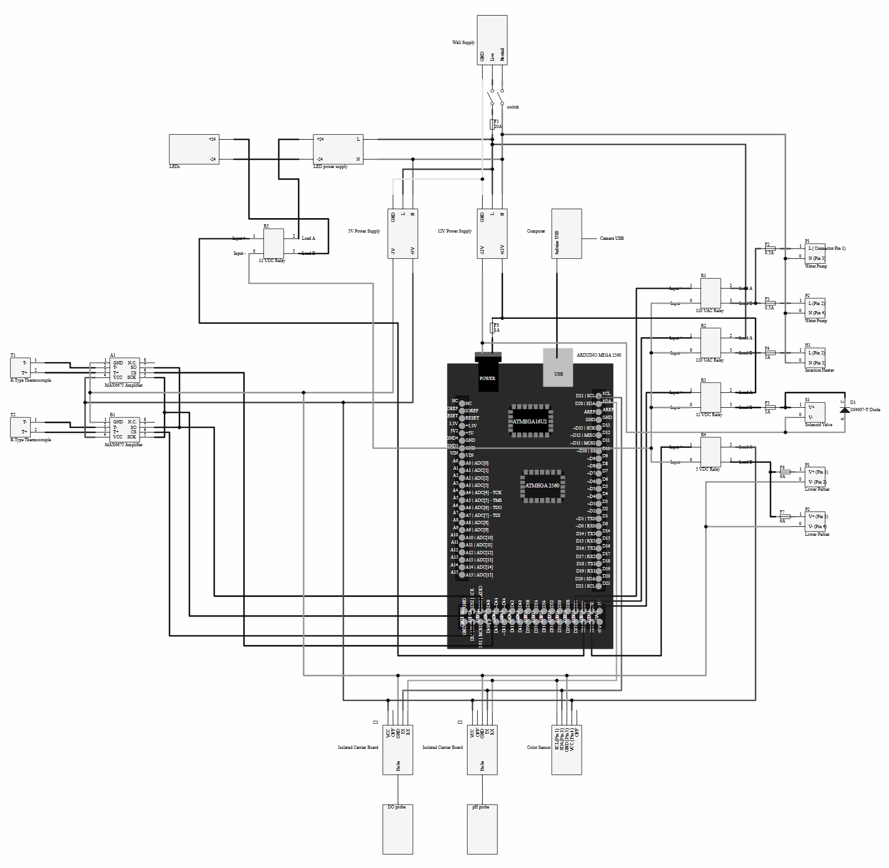
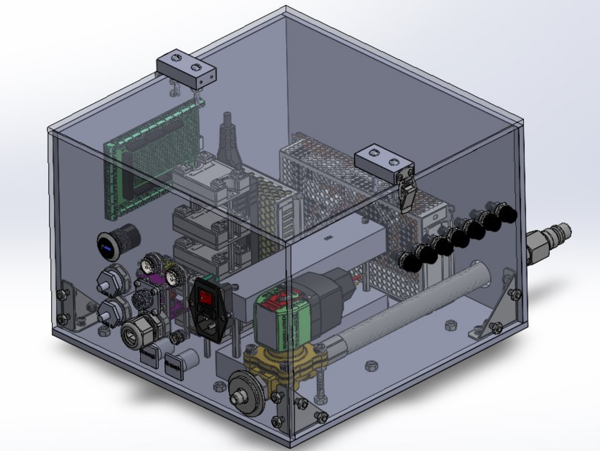
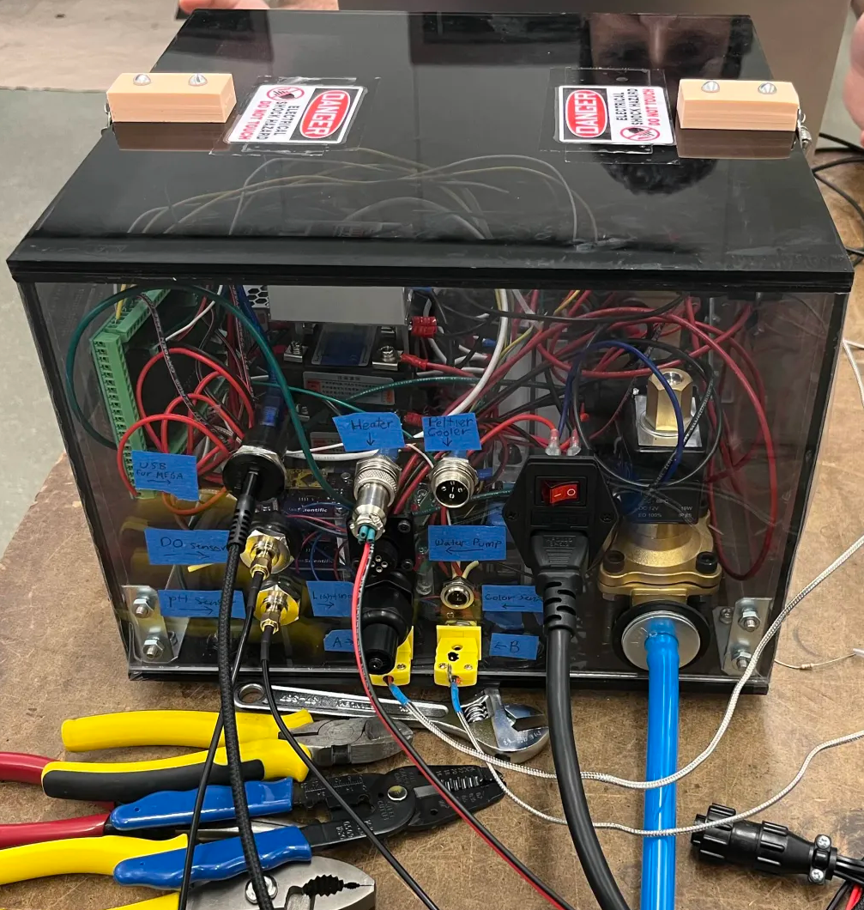
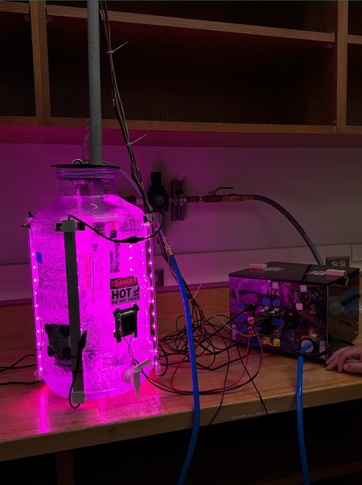
Mechatronics Project
The project that really prompted my love of systems engineering was the final project for mechatronics. Up until this point, I had had extensive experience with mechanical design, but less with integration with hardware and software. Thus, for this project, I took on primarily the role of software and hardware design, doing all of the software and the majority of the hardware.
The project here was to design a robot capable of autonomously loading and sorting cargo, navigating a course, and delivering the sorted caargo to specified points on the course. Shown below is an image of the designed robot, and an outline of the course. The robot would load cargo while in the barn area. The cargo were balls which would be sorted based on color, and stored inside the robot for later delivery.
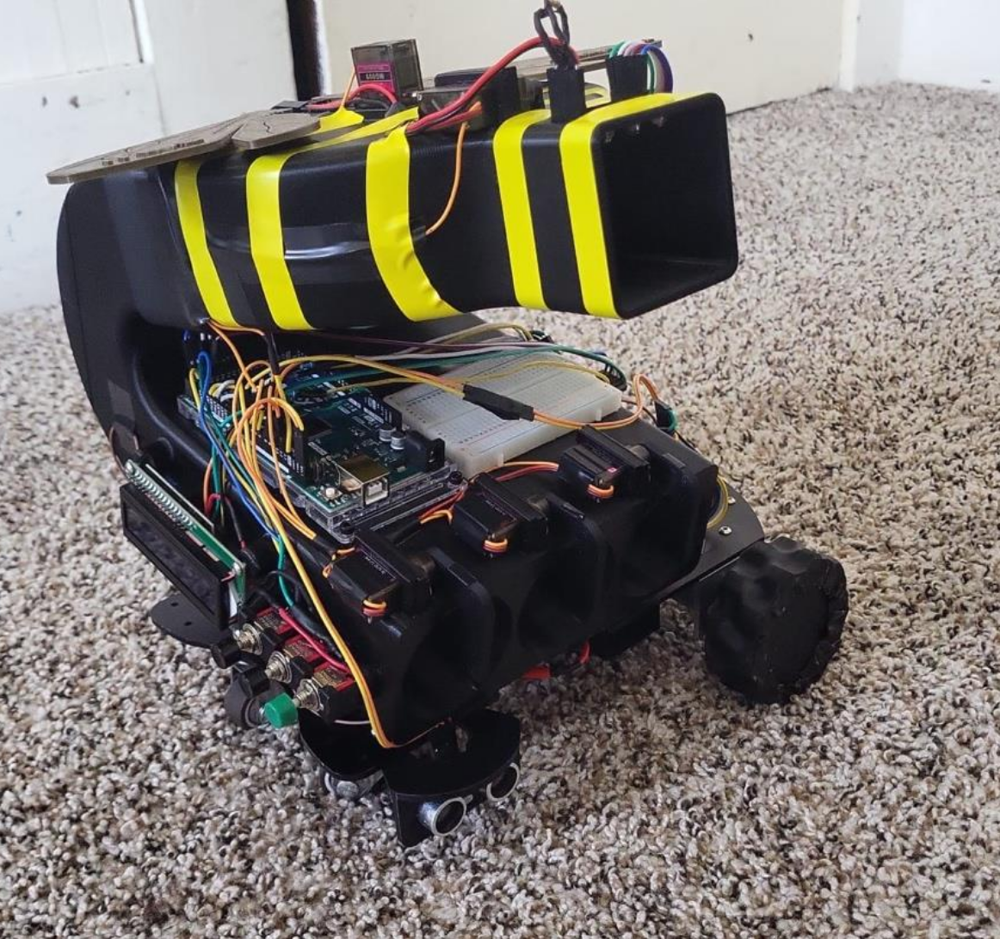
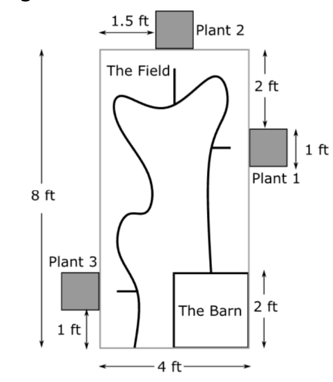
The robot was programmed using an Arduino microcontroller. I programmed the microcontroller to use feedback from ultrasonic sensors to for navigation, estimating the location of the robot relative to the walls of the course. I implemented several PID loops to use the feedback to navigate the course. This allowed the robot to effectively maneuver around the course and deliver cargo where needed. However, there were many ways that the feedback could have been better implemented to improve performance. The main improvement I would've made would be to use the time history of the ultrasonic sensor data to estimate the heading of the robot. This also could've been done with an IMU, but the hardware to estimate heading with the ultrasonic sensors already was present on the robot. There were recurring issues with the robot veering off course that could've been corrected with this additional feedback. Thus, this project served as a valuable lesson in the importance of sensor feedback in any control problem.